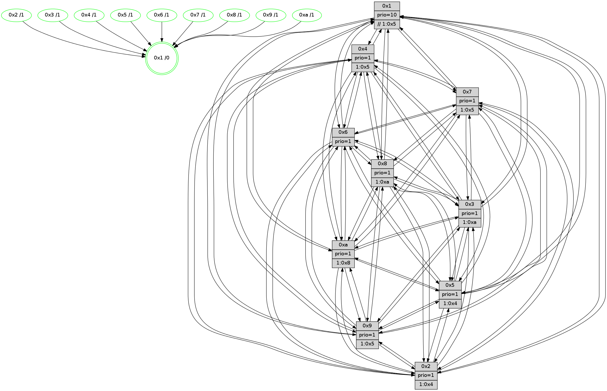

>> << IDX [start] -100 -25 -5 +0 +5 +25 +100 [1105.38822007]
 Previous packets
1100.002021 [Hello(4): seq=702 sym=5,7,6,2,3,9,8,10,1 sysInfo= stat=5:8,9,10,14/7:2,0,9,9/6:12,10,11,12/2:13,3,3,13/3:11,6,10,10/9:13,9,15,10/8:15,8,14,4/10:11,3,3,12/1:2,2,5,1]
1100.005792 [Color(4) seq=282 @0:0 prio=1 >1.@3,1.@5,1.@6,1.@7]
----------------------------------------------------------------------
1100.659435 beacon01(faad) #0 coord=01,02,03,04,05,06,07,0a,09,08 cycle=688.0ms assoc
-- color-indic=1 64 a0 6e
1100.669417 beacon02(faad) #0 coord=01,02,03,04,05,06,07,0a,09,08 cycle=688.0ms assoc 64 33 5f
1100.679418 beacon03(faad) #0 coord=01,02,03,04,05,06,07,0a,09,08 cycle=688.0ms assoc 64 49 12
1100.689417 beacon04(faad) #0 coord=01,02,03,04,05,06,07,0a,09,08 cycle=688.0ms assoc 64 3e f8
1100.699418 beacon05(faad) #0 coord=01,02,03,04,05,06,07,0a,09,08 cycle=688.0ms assoc 64 44 b5
1100.709418 beacon06(faad) #0 coord=01,02,03,04,05,06,07,0a,09,08 cycle=688.0ms assoc 64 ca 62
1100.719418 beacon07(faad) #0 coord=01,02,03,04,05,06,07,0a,09,08 cycle=688.0ms assoc 64 b0 2f
1100.729423 beacon0a(faad) #0 coord=01,02,03,04,05,06,07,0a,09,08 cycle=688.0ms assoc 64 c1 24
1100.739424 beacon09(faad) #0 coord=01,02,03,04,05,06,07,0a,09,08 cycle=688.0ms assoc 64 4f f3
1100.749425 beacon08(faad) #0 coord=01,02,03,04,05,06,07,0a,09,08 cycle=688.0ms assoc 64 35 be
1100.761892 [Hello(1): seq=612 sym=4,2,9,5,10,3,8,6,7 sysInfo=coloring-mode-on,ColoringModeRequestCalled stat=4:0,5,13,3/2:14,4,12,0/9:9,13,11,7/5:0,3,5,7/10:14,5,15,5/3:14,8,3,5/8:13,4,12,1/6:12,11,14,13/7:13,14,12,13]
1100.764623 [Color(10) seq=292 @0:0 prio=1 >1.@8]
1100.767311 [Hello(2): seq=699 sym=4,5,7,6,3,9,8,10,1 sysInfo=hasWarning stat=4:0,5,0,9/5:12,15,6,0/7:4,7,14,12/6:6,5,8,11/3:0,3,5,7/9:8,1,6,6/8:6,8,1,9/10:15,4,11,10/1:0,15,8,0]
1100.769862 [Color(8) seq=325 @0:0 prio=1 >1.@a]
1100.772987 [Color(3) seq=332 @0:0 prio=1 >1.@a]
1100.774527 [Hello(6): seq=703 sym=2,3,5,4,7,9,8,10,1 sysInfo=hasWarning stat=2:11,4,13,6/3:3,3,10,10/5:10,0,11,0/4:4,10,4,4/7:15,8,13,10/9:6,8,14,7/8:4,12,7,3/10:9,4,1,12/1:6,15,4,1]
1100.778334 [Hello(5): seq=703 sym=7,6,4,3,1,9,8,10,2 sysInfo=hasWarning stat=7:8,9,1,12/6:8,15,2,2/4:7,6,11,11/3:7,12,8,12/1:11,12,8,1/9:7,11,10,8/8:2,2,7,0/10:8,15,7,7/2:6,14,10,4]
1100.783874 [Color(6) seq=335 @0:0 prio=1]
----------------------------------------------------------------------
1101.447567 beacon01(faad) #0 coord=01,02,03,04,05,06,07,0a,09,08 cycle=688.0ms assoc
-- color-indic=1 64 1c 6b
1101.457550 beacon02(faad) #0 coord=01,02,03,04,05,06,07,0a,09,08 cycle=688.0ms assoc 64 8f 5a
1101.467549 beacon03(faad) #0 coord=01,02,03,04,05,06,07,0a,09,08 cycle=688.0ms assoc 64 f5 17
1101.477549 beacon04(faad) #0 coord=01,02,03,04,05,06,07,0a,09,08 cycle=688.0ms assoc 64 82 fd
1101.487550 beacon05(faad) #0 coord=01,02,03,04,05,06,07,0a,09,08 cycle=688.0ms assoc 64 f8 b0
1101.497552 beacon06(faad) #0 coord=01,02,03,04,05,06,07,0a,09,08 cycle=688.0ms assoc 64 76 67
1101.507551 beacon07(faad) #0 coord=01,02,03,04,05,06,07,0a,09,08 cycle=688.0ms assoc 64 0c 2a
1101.517555 beacon0a(faad) #0 coord=01,02,03,04,05,06,07,0a,09,08 cycle=688.0ms assoc 64 7d 21
1101.537555 beacon08(faad) #0 coord=01,02,03,04,05,06,07,0a,09,08 cycle=688.0ms assoc 64 89 bb
1101.548787 [Hello(10): seq=636 sym=6,2,3,8,7,5,9,4,1 sysInfo=hasWarning stat=6:8,0,13,6/2:8,6,1,9/3:13,9,3,10/8:3,9,6,0/7:11,2,13,5/5:0,6,11,14/9:5,8,14,2/4:15,8,14,9/1:13,0,13,1]
1101.552314 [Color(2) seq=295 @0:0 prio=1 >1.@4,1.@5,1.@6,1.@7]
1101.554109 [Color(1) seq=384 @0:0 prio=10 >>1.@4,1.@5,1.@6]
1101.556598 [Hello(7): seq=703 sym=2,3,5,6,4,8,9,10,1 sysInfo=hasWarning stat=2:6,11,2,0/3:9,13,0,14/5:13,12,0,1/6:4,0,0,9/4:5,8,3,1/8:12,14,10,1/9:5,12,2,1/10:10,4,3,4/1:11,11,4,0]
1101.560372 [Color(7) seq=262 @0:0 prio=1 >1.@5,1.@6,1.@8,1.@a]
1101.562679 [Color(5) seq=310 @0:0 prio=1 >1.@4,1.@7,1.@8,1.@9]
1101.566043 [STC(3)->1 #0.164 tree-change,inconsistent-stability,stable,to-color d=1]
1101.574741 [Hello(9): seq=647 sym=2,5,3,4,7,6,8,10,1 sysInfo=hasWarning stat=2:4,4,8,7/5:11,7,8,5/3:7,10,12,14/4:1,4,0,1/7:4,8,1,0/6:3,6,3,11/8:11,4,11,3/10:13,8,14,3/1:9,0,4,1]
1101.579182 [Color(9) seq=309 @0:0 prio=1 >1.@5,1.@6,1.@7,1.@8]
1101.581153 [Color(4) seq=283 @0:0 prio=1 >1.@3,1.@5,1.@6,1.@7]
----------------------------------------------------------------------
1102.235696 beacon01(faad) #0 coord=01,02,03,04,05,06,07,0a,09,08 cycle=688.0ms assoc
-- color-indic=1 64 c8 5e
1102.245679 beacon02(faad) #0 coord=01,02,03,04,05,06,07,0a,09,08 cycle=688.0ms assoc 64 5b 6f
1102.255678 beacon03(faad) #0 coord=01,02,03,04,05,06,07,0a,09,08 cycle=688.0ms assoc 64 21 22
1102.265679 beacon04(faad) #0 coord=01,02,03,04,05,06,07,0a,09,08 cycle=688.0ms assoc 64 56 c8
1102.275678 beacon05(faad) #0 coord=01,02,03,04,05,06,07,0a,09,08 cycle=688.0ms assoc 64 2c 85
1102.295680 beacon07(faad) #0 coord=01,02,03,04,05,06,07,0a,09,08 cycle=688.0ms assoc 64 d8 1f
1102.305683 beacon0a(faad) #0 coord=01,02,03,04,05,06,07,0a,09,08 cycle=688.0ms assoc 64 a9 14
1102.315684 beacon09(faad) #0 coord=01,02,03,04,05,06,07,0a,09,08 cycle=688.0ms assoc 64 27 c3
1102.325686 beacon08(faad) #0 coord=01,02,03,04,05,06,07,0a,09,08 cycle=688.0ms assoc 64 5d 8e
1102.337214 [Hello(2): seq=700 sym=4,5,7,6,3,9,8,10,1 sysInfo=hasWarning stat=4:0,6,0,9/5:13,0,6,0/7:5,8,14,12/6:7,6,8,11/3:0,4,6,7/9:9,2,6,6/8:6,9,1,9/10:0,4,11,10/1:0,0,8,0]
1102.340245 [Hello(5): seq=704 sym=7,6,4,3,1,9,8,10,2 sysInfo=hasWarning stat=7:8,9,1,12/6:8,0,2,2/4:7,7,11,11/3:7,12,9,12/1:11,12,8,1/9:8,12,10,8/8:3,2,7,0/10:8,15,7,7/2:6,14,10,4]
1102.343600 [Hello(3): seq=704 sym=1,7,6,2,4,8,9,10,5 sysInfo=hasWarning stat=1:11,11,1,0/7:3,10,6,10/6:5,15,4,5/2:7,5,9,0/4:4,2,10,10/8:0,3,3,2/9:0,1,11,13/10:4,6,8,3/5:14,1,0,14]
1102.348641 [Color(3) seq=333 @0:0 prio=1 >1.@a]
1102.351309 [Color(10) seq=293 @0:0 prio=1 >1.@8]
1102.353926 [Hello(6): seq=704 sym=2,3,5,4,7,9,8,10,1 sysInfo=hasWarning stat=2:11,5,13,6/3:3,3,11,10/5:10,1,11,0/4:4,11,4,4/7:0,9,13,10/9:7,9,14,7/8:4,12,7,3/10:10,4,1,12/1:7,0,4,1]
1102.356447 [Color(8) seq=326 @0:0 prio=1 >1.@a]
1102.358309 [Color(6) seq=336 @0:0 prio=1]
1102.363404 [Hello(1): seq=613 sym=4,2,9,5,10,3,8,6,7 sysInfo=coloring-mode-on,ColoringModeRequestCalled stat=4:0,6,13,3/2:14,4,12,0/9:10,14,11,7/5:1,4,5,7/10:15,5,15,5/3:14,8,4,5/8:13,4,12,1/6:12,12,14,13/7:14,15,12,13]
----------------------------------------------------------------------
1103.023826 beacon01(faad) #0 coord=01,02,03,04,05,06,07,0a,09,08 cycle=688.0ms assoc
-- color-indic=1 64 74 5b
1103.033808 beacon02(faad) #0 coord=01,02,03,04,05,06,07,0a,09,08 cycle=688.0ms assoc 64 e7 6a
1103.043808 beacon03(faad) #0 coord=01,02,03,04,05,06,07,0a,09,08 cycle=688.0ms assoc 64 9d 27
1103.053810 beacon04(faad) #0 coord=01,02,03,04,05,06,07,0a,09,08 cycle=688.0ms assoc 64 ea cd
1103.063809 beacon05(faad) #0 coord=01,02,03,04,05,06,07,0a,09,08 cycle=688.0ms assoc 64 90 80
1103.073811 beacon06(faad) #0 coord=01,02,03,04,05,06,07,0a,09,08 cycle=688.0ms assoc 64 1e 57
1103.083810 beacon07(faad) #0 coord=01,02,03,04,05,06,07,0a,09,08 cycle=688.0ms assoc 64 64 1a
1103.093816 beacon0a(faad) #0 coord=01,02,03,04,05,06,07,0a,09,08 cycle=688.0ms assoc 64 15 11
1103.103815 beacon09(faad) #0 coord=01,02,03,04,05,06,07,0a,09,08 cycle=688.0ms assoc 64 9b c6
1103.113816 beacon08(faad) #0 coord=01,02,03,04,05,06,07,0a,09,08 cycle=688.0ms assoc 64 e1 8b
1103.125034 [Hello(10): seq=637 sym=6,2,3,8,7,5,9,4,1 sysInfo=hasWarning stat=6:9,1,13,6/2:9,7,1,9/3:13,9,4,10/8:3,10,6,0/7:12,3,13,5/5:0,7,11,14/9:6,9,14,2/4:15,9,14,9/1:14,1,13,1]
1103.127720 [Hello(8): seq=648 sym=5,2,3,4,9,6,7,10,1 sysInfo=hasWarning stat=5:5,2,15,0/2:15,14,10,9/3:12,3,15,14/4:12,10,4,10/9:11,1,0,3/6:6,0,13,13/7:13,6,14,3/10:14,9,3,3/1:12,6,3,0]
1103.131081 [Color(5) seq=311 @0:0 prio=1 >1.@4,1.@7,1.@8,1.@9]
1103.133126 [Hello(4): seq=704 sym=5,7,6,2,3,9,8,10,1 sysInfo= stat=5:10,9,10,14/7:2,0,9,9/6:14,12,11,12/2:15,3,3,13/3:12,8,10,10/9:13,9,15,10/8:0,10,14,4/10:12,5,3,12/1:4,2,5,1]
1103.136251 [Color(4) seq=284 @0:0 prio=1 >1.@3,1.@5,1.@6,1.@7]
1103.139354 [Hello(9): seq=648 sym=2,5,3,4,7,6,8,10,1 sysInfo=hasWarning stat=2:5,5,8,7/5:12,7,8,5/3:8,11,12,14/4:1,5,0,1/7:4,8,1,0/6:4,7,3,11/8:12,5,11,3/10:13,9,14,3/1:10,0,4,1]
1103.143141 [Color(9) seq=310 @0:0 prio=1 >1.@5,1.@6,1.@7,1.@8]
1103.146844 [Color(1) seq=385 @0:0 prio=10 >>1.@4,1.@5,1.@6]
1103.149726 [Color(2) seq=296 @0:0 prio=1 >1.@4,1.@5,1.@6,1.@7]
1103.155620 [Hello(7): seq=704 sym=2,3,5,6,4,8,9,10,1 sysInfo=hasWarning stat=2:7,11,2,0/3:10,14,1,14/5:14,13,0,1/6:5,1,0,9/4:5,9,3,1/8:12,15,10,1/9:6,13,2,1/10:11,5,3,4/1:12,11,4,0]
1103.159404 [Color(7) seq=263 @0:0 prio=1 >1.@5,1.@6,1.@8,1.@a]
----------------------------------------------------------------------
1103.811957 beacon01(faad) #0 coord=01,02,03,04,05,06,07,0a,09,08 cycle=688.0ms assoc
-- color-indic=1 64 b0 55
1103.821940 beacon02(faad) #0 coord=01,02,03,04,05,06,07,0a,09,08 cycle=688.0ms assoc 64 23 64
1103.831939 beacon03(faad) #0 coord=01,02,03,04,05,06,07,0a,09,08 cycle=688.0ms assoc 64 59 29
1103.841940 beacon04(faad) #0 coord=01,02,03,04,05,06,07,0a,09,08 cycle=688.0ms assoc 64 2e c3
1103.851939 beacon05(faad) #0 coord=01,02,03,04,05,06,07,0a,09,08 cycle=688.0ms assoc 64 54 8e
1103.861939 beacon06(faad) #0 coord=01,02,03,04,05,06,07,0a,09,08 cycle=688.0ms assoc 64 da 59
1103.871939 beacon07(faad) #0 coord=01,02,03,04,05,06,07,0a,09,08 cycle=688.0ms assoc 64 a0 14
1103.881946 beacon0a(faad) #0 coord=01,02,03,04,05,06,07,0a,09,08 cycle=688.0ms assoc 64 d1 1f
1103.891944 beacon09(faad) #0 coord=01,02,03,04,05,06,07,0a,09,08 cycle=688.0ms assoc 64 5f c8
1103.901946 beacon08(faad) #0 coord=01,02,03,04,05,06,07,0a,09,08 cycle=688.0ms assoc 64 25 85
1103.913477 [Hello(5): seq=705 sym=7,6,4,3,1,9,8,10,2 sysInfo=hasWarning stat=7:9,10,1,12/6:9,1,2,2/4:8,8,11,11/3:8,13,9,12/1:12,13,8,1/9:9,13,10,8/8:4,3,7,0/10:9,0,7,7/2:6,15,10,4]
1103.917248 [Hello(3): seq=705 sym=1,7,6,2,4,8,9,10,5 sysInfo=hasWarning stat=1:12,12,1,0/7:4,11,6,10/6:6,0,4,5/2:8,6,9,0/4:5,3,10,10/8:1,4,3,2/9:1,2,11,13/10:5,7,8,3/5:15,2,0,14]
1103.920065 [Color(3) seq=334 @0:0 prio=1 >1.@a]
1103.921669 [Color(8) seq=327 @0:0 prio=1 >1.@a]
1103.923522 [Hello(1): seq=614 sym=4,2,9,5,10,3,8,6,7 sysInfo=coloring-mode-on,ColoringModeRequestCalled stat=4:0,6,13,3/2:14,5,12,0/9:10,14,11,7/5:1,4,5,7/10:0,5,15,5/3:14,8,4,5/8:14,4,12,1/6:12,12,14,13/7:15,0,12,13]
1103.926162 [Color(10) seq=294 @0:0 prio=1 >1.@8]
1103.928035 [Hello(6): seq=705 sym=2,3,5,4,7,9,8,10,1 sysInfo=hasWarning stat=2:12,6,13,6/3:3,3,11,10/5:11,2,11,0/4:5,12,4,4/7:1,10,13,10/9:8,10,14,7/8:5,12,7,3/10:11,4,1,12/1:8,1,4,1]
1103.931176 [Color(6) seq=337 @0:0 prio=1]
1103.936092 [Hello(2): seq=701 sym=4,5,7,6,3,9,8,10,1 sysInfo=hasWarning stat=4:0,6,0,9/5:14,0,6,0/7:6,9,14,12/6:8,7,8,11/3:1,5,6,7/9:9,2,6,6/8:7,10,1,9/10:1,5,11,10/1:1,0,8,0]
----------------------------------------------------------------------
1104.600088 beacon01(faad) #0 coord=01,02,03,04,05,06,07,0a,09,08 cycle=688.0ms assoc
-- color-indic=1 64 0c 50
1104.610071 beacon02(faad) #0 coord=01,02,03,04,05,06,07,0a,09,08 cycle=688.0ms assoc 64 9f 61
1104.620070 beacon03(faad) #0 coord=01,02,03,04,05,06,07,0a,09,08 cycle=688.0ms assoc 64 e5 2c
1104.630071 beacon04(faad) #0 coord=01,02,03,04,05,06,07,0a,09,08 cycle=688.0ms assoc 64 92 c6
1104.640071 beacon05(faad) #0 coord=01,02,03,04,05,06,07,0a,09,08 cycle=688.0ms assoc 64 e8 8b
1104.650072 beacon06(faad) #0 coord=01,02,03,04,05,06,07,0a,09,08 cycle=688.0ms assoc 64 66 5c
1104.660071 beacon07(faad) #0 coord=01,02,03,04,05,06,07,0a,09,08 cycle=688.0ms assoc 64 1c 11
1104.670076 beacon0a(faad) #0 coord=01,02,03,04,05,06,07,0a,09,08 cycle=688.0ms assoc 64 6d 1a
1104.690078 beacon08(faad) #0 coord=01,02,03,04,05,06,07,0a,09,08 cycle=688.0ms assoc 64 99 80
1104.702895 [Hello(10): seq=638 sym=6,2,3,8,7,5,9,4,1 sysInfo=hasWarning stat=6:10,2,13,6/2:10,8,1,9/3:13,9,4,10/8:4,10,6,0/7:13,4,13,5/5:1,8,11,14/9:7,10,14,2/4:0,10,14,9/1:14,2,13,1]
1104.705613 [STC(1) #0.165 tree-change,inconsistent-stability,stable,to-color d=0]
1104.706887 [Color(5) seq=312 @0:0 prio=1 >1.@4,1.@7,1.@8,1.@9]
1104.708764 [Hello(7): seq=705 sym=2,3,5,6,4,8,9,10,1 sysInfo=hasWarning stat=2:8,11,2,0/3:11,15,1,14/5:15,13,0,1/6:6,2,0,9/4:5,9,3,1/8:13,0,10,1/9:6,13,2,1/10:12,6,3,4/1:13,11,4,0]
1104.711799 [Hello(8): seq=649 sym=5,2,3,4,9,6,7,10,1 sysInfo=hasWarning stat=5:6,3,15,0/2:0,15,10,9/3:12,3,15,14/4:13,11,4,10/9:12,2,0,3/6:7,1,13,13/7:14,7,14,3/10:14,10,3,3/1:13,7,3,0]
1104.714333 [Color(1) seq=386 @0:0 prio=10 >>1.@5,1.@6,1.@7]
1104.716349 [Color(7) seq=264 @0:0 prio=1 >1.@5,1.@6,1.@8,1.@a]
1104.718518 [Color(2) seq=297 @0:0 prio=1 >1.@4,1.@5,1.@6,1.@7]
1104.726171 [Hello(9): seq=649 sym=2,5,3,4,7,6,8,10,1 sysInfo=hasWarning stat=2:6,6,8,7/5:13,7,8,5/3:9,12,12,14/4:1,5,0,1/7:5,9,1,0/6:5,8,3,11/8:13,6,11,3/10:14,10,14,3/1:11,1,4,1]
1104.729308 [Color(9) seq=311 @0:0 prio=1 >1.@5,1.@6,1.@7,1.@8]
1104.734214 [Hello(4): seq=705 sym=5,7,6,2,3,9,8,10,1 sysInfo= stat=5:11,9,10,14/7:3,1,9,9/6:15,13,11,12/2:0,4,3,13/3:13,9,10,10/9:14,10,15,10/8:1,11,14,4/10:13,6,3,12/1:5,3,5,1]
1104.737684 [Color(4) seq=285 @0:0 prio=1 >1.@5,1.@6,1.@7,1.@8]